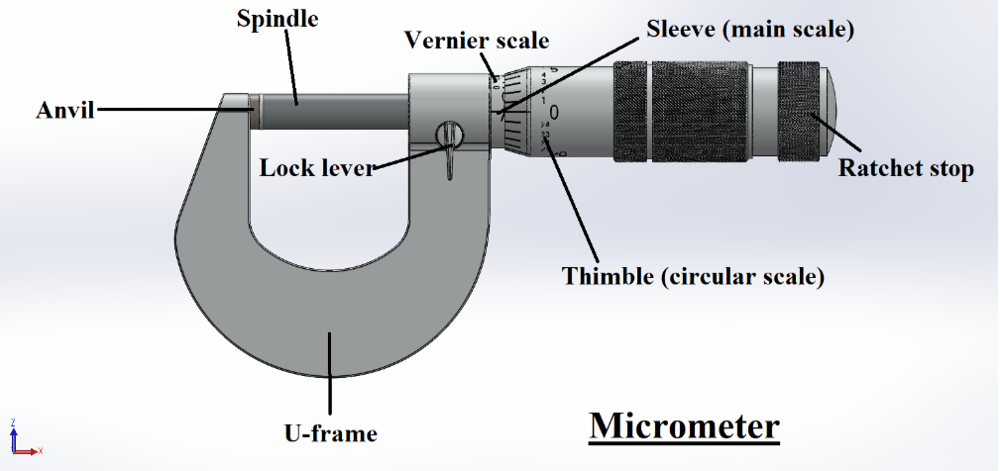

Theory
A micrometer screw gauge is a precision measuring instrument used to measure very small dimensions such as the diameter or thickness of thin wires, sheets, and small machine parts. It works on the screw principle: when the thimble rotates, the spindle advances linearly due to the screw thread inside.
Each full rotation of the thimble moves the spindle by a fixed distance called the pitch. In a standard metric micrometer, the pitch is 0.5 mm. The thimble has 25 divisions, so each division moves the spindle by:
LC = 0.5 mm / 25 = 0.02 mm
Some micrometers also have a vernier scale with 10 divisions, giving further precision. The vernier least count is:
VLC = 0.02 / 10 = 0.002 mm
Main parts: U-frame, anvil, spindle, sleeve (main scale), thimble (circular scale), ratchet stop, lock lever. The ratchet applies uniform pressure while measuring, and the lock lever holds the spindle in position for stable reading.
Applications:
- Measuring the thickness of metal sheets and wires.
- Checking precision-machined components in workshops.
- Measuring small parts in watch making and electronics.
Advantages:
- Very high accuracy (up to 0.001 mm).
- Easy to read and reliable with proper use.
- Compact and portable.
Disadvantages:
- Measures only small sizes and external dimensions (unless special type).
- More expensive than simple calipers.
- Needs careful handling to avoid damage or error.
